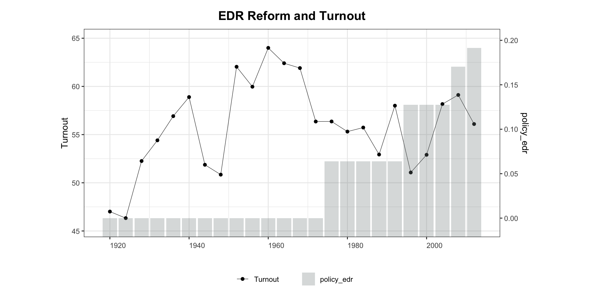
3 Bivariate Relationships
This chapter shows how to plot the time series of an outcome Y and a treatment D together, using type = "bivariate". The plot can show either aggregate averages over time (by.unit = FALSE, the default) or unit-level panels (by.unit = TRUE).
Plot style is controlled via style = c("<Y-style>", "<D-style>"), where each element is one of "line" / "l", "connected" / "c", or "bar" / "b". The defaults depend on the types of Y and D:
| Y type | D type | Default style |
|---|---|---|
| continuous | discrete | c("l", "b") |
| continuous | continuous | c("l", "l") |
| discrete | discrete | c("b", "b") |
| discrete | continuous | c("l", "b") |
3.1 In aggregate
When by.unit = FALSE (default), panelView plots the cross-sectional average of Y and D against time.
Continuous Y, discrete D:
Adjust y-axis ranges with ylim = list(c(lo, hi), c(lo, hi)), where the first vector covers the outcome and the second covers the treatment.
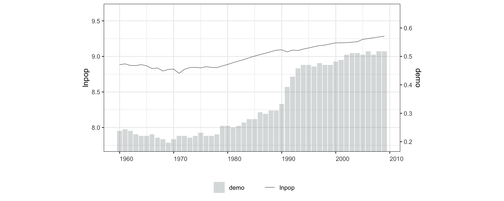
Discrete Y, discrete D — default style = c("b", "b"):
panelview(Y ~ D, data = simdata, index = c("id", "time"),
type = "bivariate", theme.bw = FALSE, outcome.type = "discrete")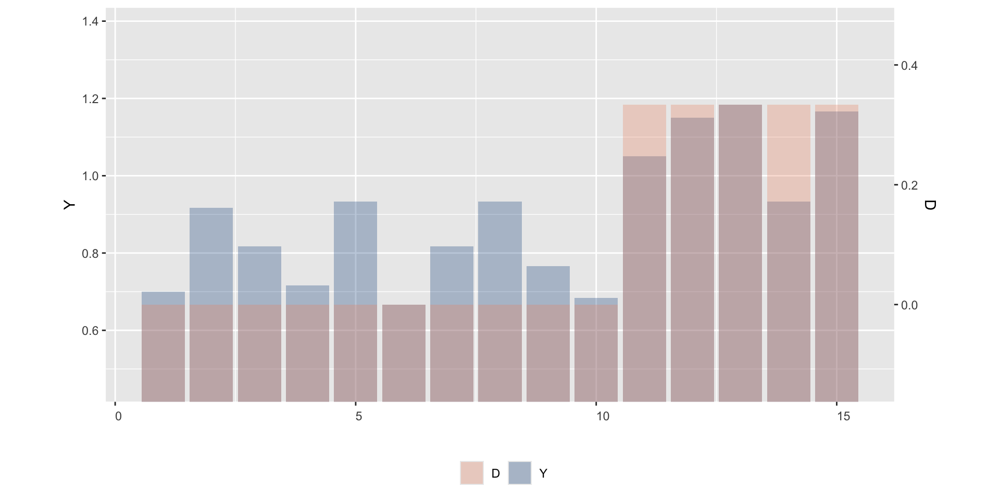
Continuous Y, continuous D — default style = c("l", "l"):
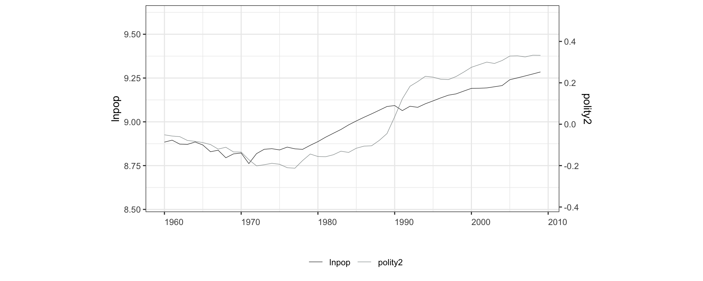
Discrete Y, continuous D — default style = c("l", "b"):
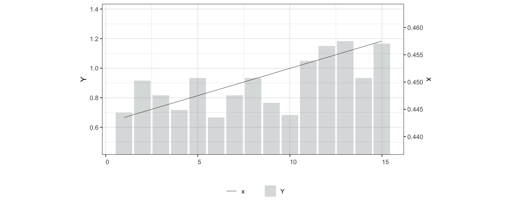
Line style for a discrete treatment; lwd controls line width (default 0.2):
3.2 By unit
Set by.unit = TRUE to plot Y and D as separate panels for each unit. Use show.id or id to select units.
Continuous Y, discrete D:
panelview(turnout ~ policy_edr,
data = turnout, index = c("abb", "year"),
ylab = "Turnout", type = "bivariate",
by.unit = TRUE, show.id = 1:12)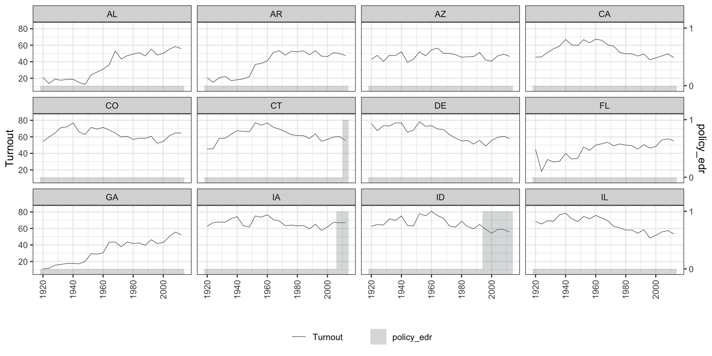
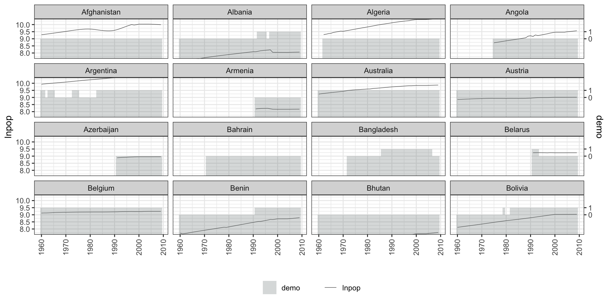
Discrete Y, discrete D:
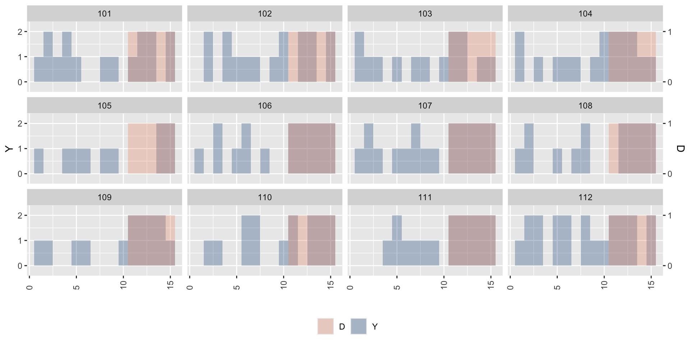
Continuous Y, continuous D:
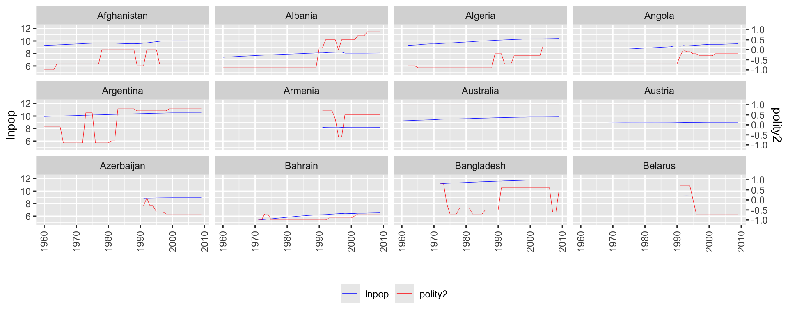
Discrete Y, continuous D:
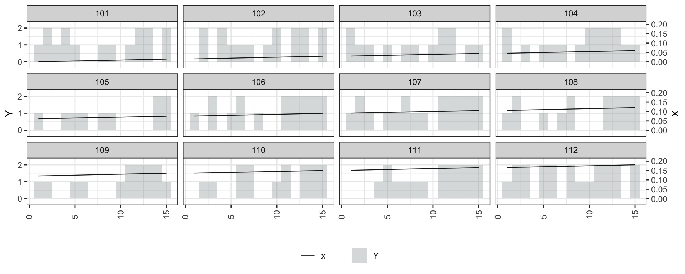
Use style = "line" to draw both Y and D as lines:
panelview(turnout ~ policy_edr + policy_mail_in + policy_motor,
data = turnout, index = c("abb", "year"),
type = "bivariate", by.unit = TRUE,
style = "line", theme.bw = FALSE,
lwd = 0.5, show.id = 1:12, ylab = "Turnout")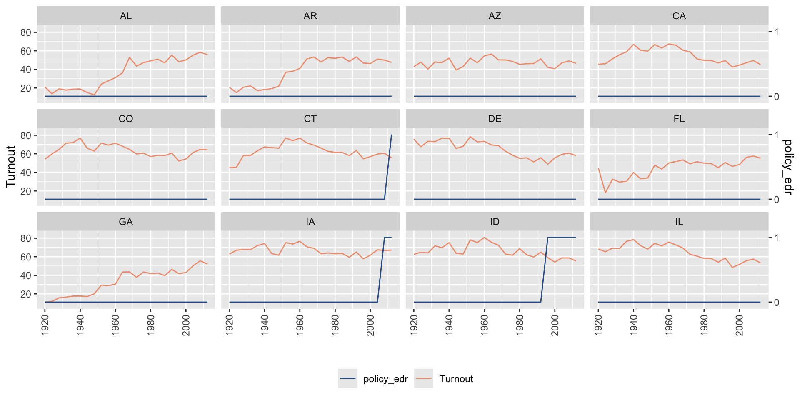